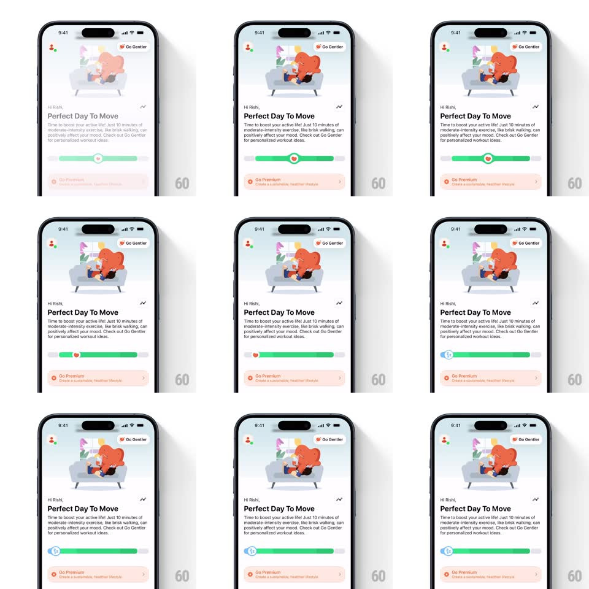

Media
Frame-by-frame

Rebuild this interaction 1:1: Gentler Streak's daily mood slider - drag the handle and its icon morphs while the track fill changes color, turning a check-in into a playful gesture.

Rebuild this interaction 1:1: Gentler Streak's daily mood slider - drag the handle and its icon morphs while the track fill changes color, turning a check-in into a playful gesture.
## Integration
Integration: stack-agnostic spec - springs given as stiffness/damping, timed motions as duration + curve; map every value to your framework and animation library of choice.
## Scene
The daily check-in screen ("Hi Rishi,", "Perfect Day To Move" with a couch-lounging mascot illustration, supportive copy). Below sits a wide slider: a filled track (green on the active side) with a circular handle carrying a small icon, and a Go Premium card beneath.
## Motion spec
Pattern: morphing-handle slider.
- Drag: the handle tracks the finger 1:1 horizontally; the track fills from the left edge to the handle with a color that crossfades through the mood ramp (blue at low, through teal, to green at high) continuously with position.
- The handle's icon morphs at zone boundaries: it scales down to 0.6 and back up (spring ~480/20, 200ms total) while crossfading to the new zone's glyph (heart, flower, bolt); a tiny rotation (+-12deg) accents the swap.
- On press-down, the handle lifts (scale 1 to 1.15, shadow deepens, 150ms); on release it settles back with a soft bounce.
- Release snaps the handle to the nearest zone tick (spring ~520/26) and commits: the headline copy above crossfades to the selected mood's text (250ms).
- Idle: the handle pulses gently (scale 1 to 1.06, 1.8s) until first interaction.
## Calibration
- Color and icon must always agree with position - the morph happens mid-drag, not after release.
- Zone thresholds at even fifths of the track; ticks are subtle notches, not labeled stops.
## Reduced motion
Handle moves without icon morph; track fill snaps per zone.
## Don't miss
- The fill is the feedback: at rest the handle sits with fill exactly to its center.
- The illustration and copy above are static during the drag - only slider chrome moves.